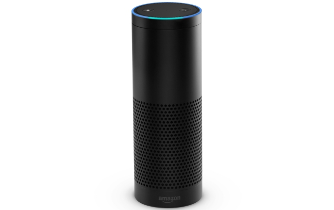
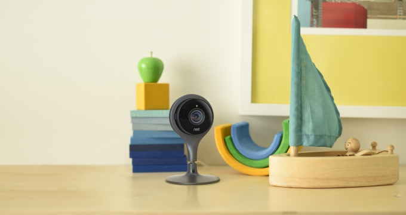
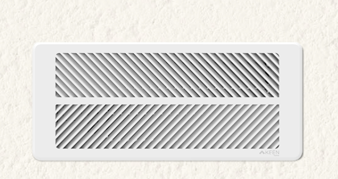
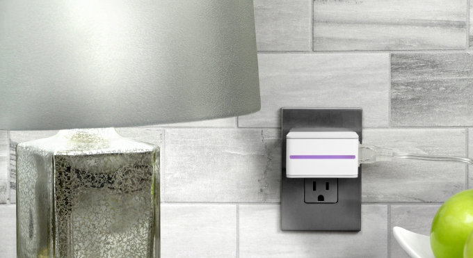
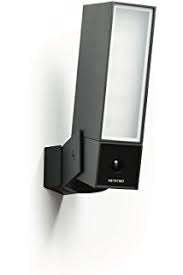
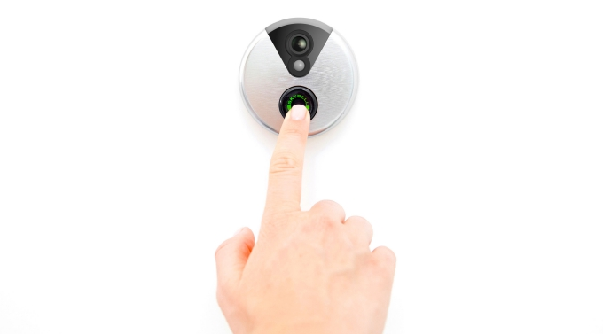
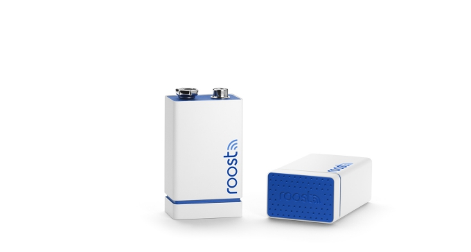
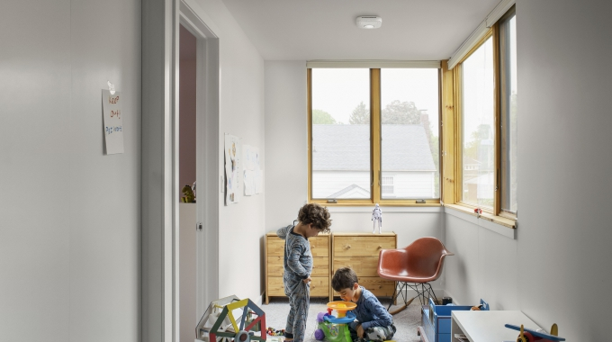
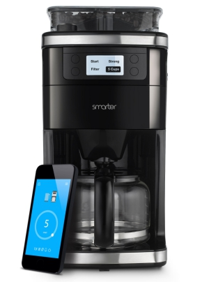

Amazon Echo

No smart home device captured the imagination of the tech world like Amazon's Echo. Part Bluetooth speaker, part home assistant, Echo and its Alexa cloud-based service has proven to be a useful tool for smart home aficionados. It may not excel as a speaker, but the ability to connect to Philips Hue, WeMo, Samsung SmartThings, Wink, Insteon and more, makes it a simple and affordable way to control all your connected tech with one device. If Amazon can put aside its bottom-line thinking and learn to play nice with other tech companies, particularly for a device all about connection, Echo could be a powerhouse.
Nest Cam

In-home security has been a fixture in the smart home world for years. After purchasing the popular Dropcam, Nest rebranded the line of security cameras and released the latest version in 2015 as Nest Cam. The new cameras feature 1080P streaming, advanced night vision, activity alerts and integration with the Nest app. With a 130-degree wide-angle lens and the ability to zoom, the Nest Cam offers some of the best coverage of any security camera on the market. In cooperation with Nest Aware, the device uses advanced algorithms with depth sensing and facial recognition to limit the amount of false alarms. Users can also sign-up for 24/7 recording, with 10-day video history costing $100/year and 30-day running $300/year.
Keen Home Smart Vent

In 2015, Keen Home took the idea of smart heating and cooling, popularized by Nest and other hi-tech thermostats, and enhanced it. Working in tandem with the smart thermostats, Keen Home's new Smart Vents retrofit existing vents in your home and then connect to your wireless network to create an in-home system that individually heats or cools each room as needed. The company claims, on average, most homes have two to four rooms that are either too cold or too hot. With its new Smart Vents, Keen believes that problem can be a thing of the past.
Stack Lighting
The ability to control lighting was one of the first smart home innovations, but Stack is taking it a step further with its line of bulbs that adjust to you automatically. They have built-in motion detectors, so they know when you're in a room and when you've left, meaning you (in theory) won't have to flip a switch ever again. Light will also shift throughout the day, starting with a crisp white hue to help wake you from slumber, moving to a warmer tone in the evening to offer relaxation. Stack's lights also adjust to the perfect intensity based on the natural lighting in the room, plus offer superb energy efficiency so users can rest assured the lights won't blow their budget.
iDevices Switch

Smart plugs are nothing new in the connected home world, but iDevices' Switch is one of the best. It's Wi-Fi and Bluetooth enabled, letting users control whatever device or appliance they have plugged into Switch with their phone. The real benefit, though, is the ability to tailor the device to work with your schedule and your family's needs, such as creating different "zones" in your home that allow you to turn on or off all the devices in a designated area.
Netatmo Welcome

Netatmo's Welcome security camera offers advanced facial recognition, alerting users when certain members (kids, for example) arrive home. It can also be paired with "tags", which are essentially motion devices to be placed on doors or windows that, when moved, will notify you. Add in customizable notifications and privacy settings, and the Netatmo Welcome is one of the most innovative security cameras to come on the market. Future versions could be clear winners, but the first iteration is plagued at times by poor performance.
SkyBell Wi-Fi Video Doorbell

Answering the door doesn't have to be a hassle with SkyBell's video doorbell. It gives users a live, full HD feed, night vision, motion detection and two-way audio so you can talk directly with whoever is at your door. There is also a quiet mode, which will disable the indoor doorbell, plus on-demand video so users can check what’s happening in front of their door whenever they want.
Roost Battery

If you're not convinced to drop $100 for a Nest Protect, the Roost battery is a great, affordable way to smarten up your existing smoke detector. At $35, the smart battery is 9V, slated to last five years and, when coupled with the company’s app, will notify users if power is low or if smoke/fire has been detected. Instead of waving a towel in front of the smoke detector while your dinner starts to burn on the stove, users can simply snooze the alarm. If the situation is serious, you can also alert family, friends and neighbors of danger.
Nest Protect

Nest refreshed its entire lineup this year, bringing new features to its best-selling thermostat, smoke detector and the all-new Nest Cam. Though not a complete overhaul, the new Nest Protect does bring a slimmer profile, the diminutive design allowing the device to simply disappear in your home, a brighter light ring and a bevy of new additions. Included are the split-spectrum sensor, which uses two wavelengths of light to detect both slow and fast-burning fires, a 10-year product warranty, the ability to silence false alarms on the new Nest App and easier maintenance with safety and sound checkups that can be done right from your phone. The Nest Protect hasn't proven to be as immediately budget-friendly as the company's thermostat, but Nest does claim that using its fire alarm will give users lower home insurance premiums.
Smarter Coffee Machine

Smart devices are slowly finding a place in one of the home's most important rooms: the kitchen. Numerous cooking appliances have gotten tech friendly in recent years, and in 2015 Smarter is bringing hi-tech to coffee lovers. The company's new coffee machine lets users control their brew via Wi-Fi and a connected app on their smartphone, meaning you don't even need to be home to make a pot of coffee. You can set the machine to have coffee ready for you as soon as you wake up, get home, or any time you'd like. It also has variable strength and cup settings, plus water sensors that will alert users when levels are low.
« Go Back to Home Page »